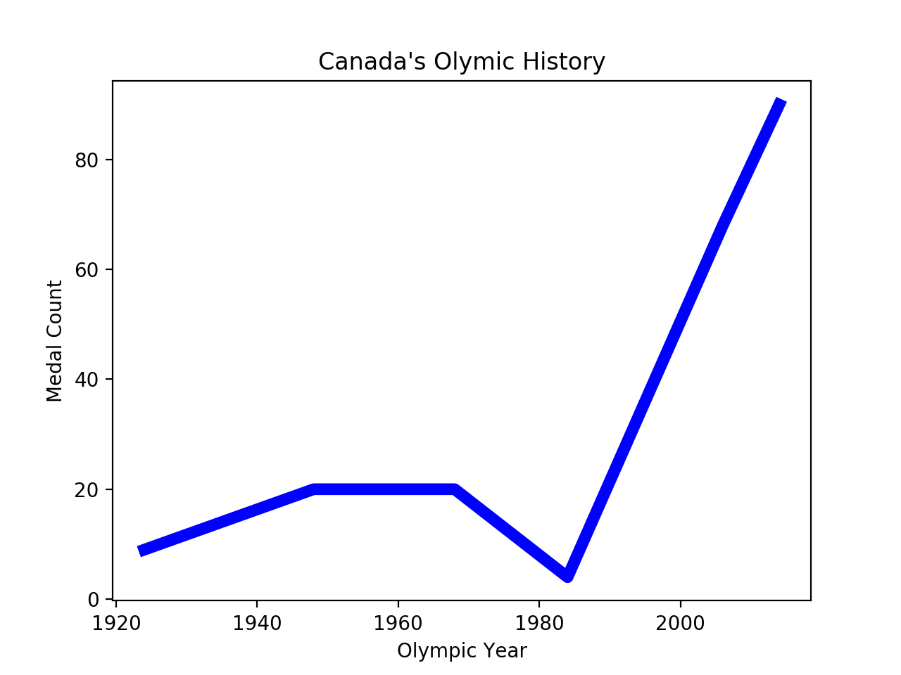
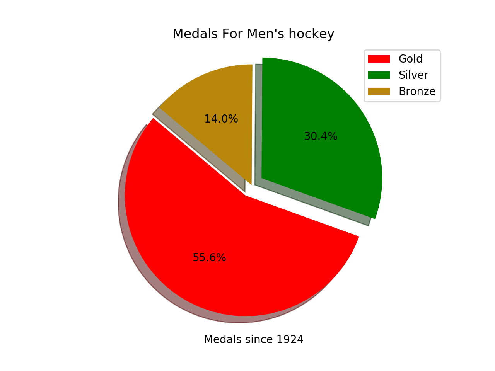
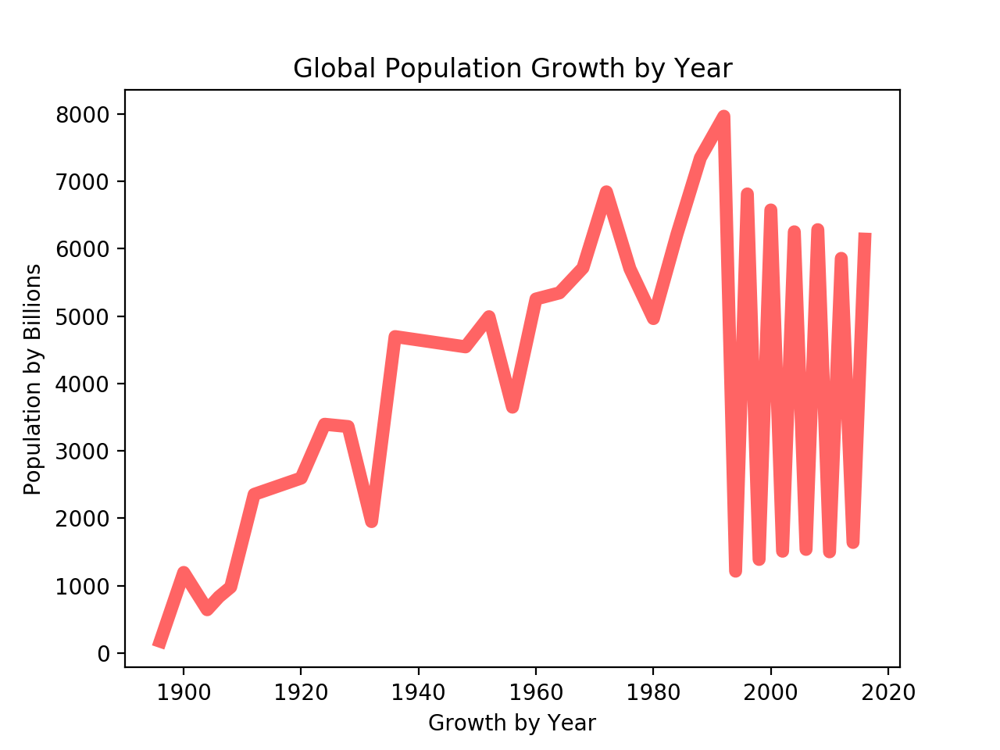
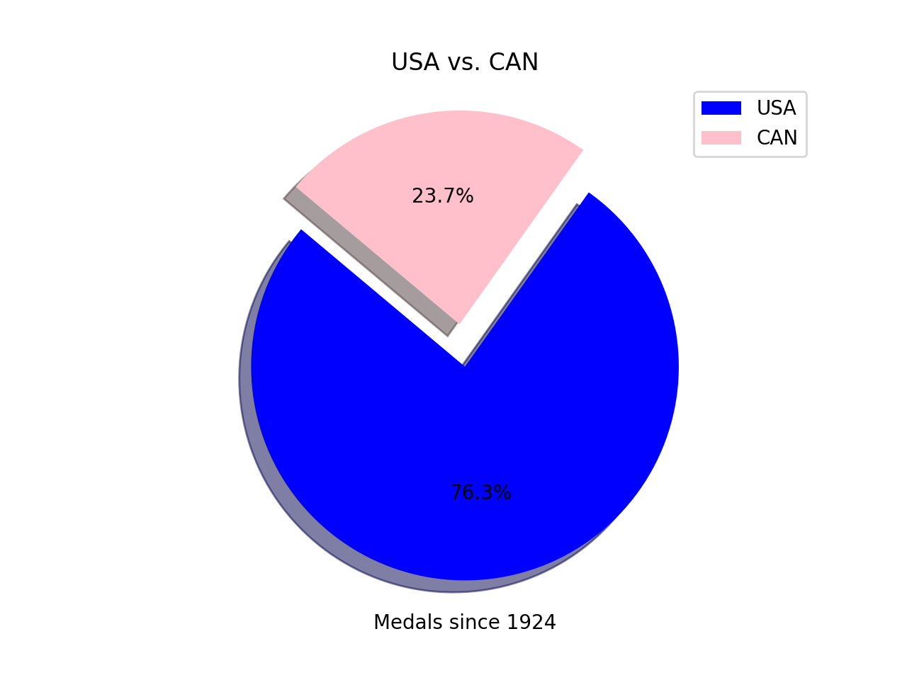
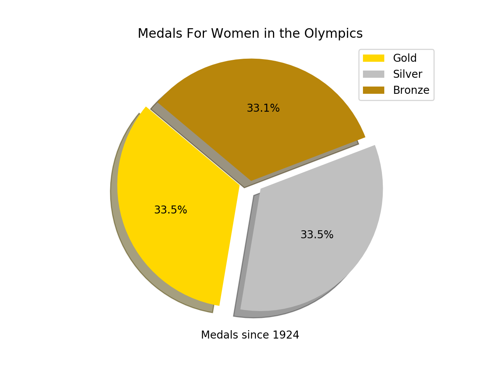

Olympic Data Vizualization
Canada's history at the Olympics
The nation made its debut at the 1900 Summer Olympics. Canada competes under the IOC country code CAN. Canada has hosted the Summer Olympic Games once, in 1976 in Montreal, and the Winter Olympic Games twice, in Calgary, Alberta in 1988 and Vancouver, British Columbia in 2010.
Medals won by Canada's men hockey team
From the year 1992 every alternate olympics game shows that only very few players has paricipated till 2016. Therefore, we need to check the reason is it due to the less number of nations participating in the olympics for the every alternate year from 1992. Therefore, we will be plotting the number of nations participating olympics from the year 1896 to 2016.
Medals won by men in the Olympics
From the year 1992 every alternate olympics game shows that only very few players has paricipated till 2016. Therefore, we need to check the reason is it due to the less number of nations participating in the olympics for the every alternate year from 1992. Therefore, we will be plotting the number of nations participating olympics from the year 1896 to 2016.
USA vs. Canada at the olympics
From the year 1992 every alternate olympics game shows that only very few players has paricipated till 2016. Therefore, we need to check the reason is it due to the less number of nations participating in the olympics for the every alternate year from 1992. Therefore, we will be plotting the number of nations participating olympics from the year 1896 to 2016.
Medals won by women at the olympics
The number of women athletes at the Olympic Games is approaching 50 per cent. Since 2012, women have participated in every Olympic sport at the Games. All new sports to be included in the Games must contain women’s events. The IOC has increased the number of women’s events on the Olympic programme, in collaboration with the IFs and the organising committees.
